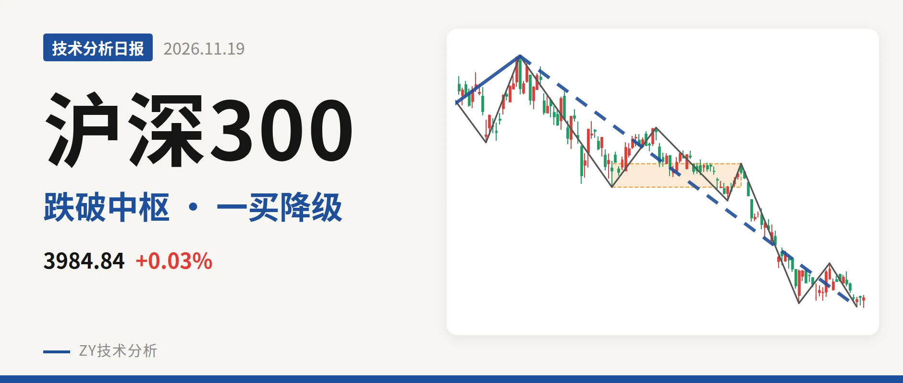
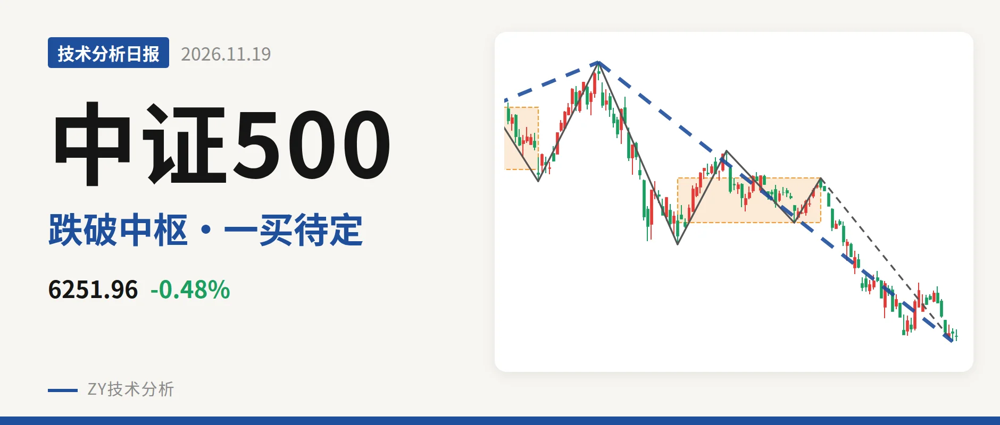
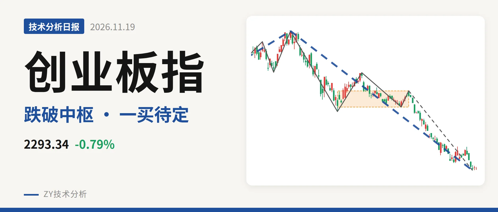

技术分析日报 · 2026-11-20

上证指数 3533.79 -1.22%
跌破日线中枢，暂定的一买3501点

沪深300 3984.84 +0.03%
日线下破4478中枢，一买被新低降级

中证500 6251.96 -0.48%
暂定一买6195，反抽看7451点附近

中证2000 2485.11 -3.03%
跌破2585中枢 暂定一买看2475

中证红利 5548.05 -0.46%
日线中枢中轴5548点待选择

创业板指 2293.34 -0.79%
跌破3227点中枢，暂定一买2264点待验
⚠️ 本文为基于公开行情数据的缠论技术结构记录，由程序自动计算并生成，仅供学习交流，不构成任何投资建议。市场有风险，投资需谨慎。